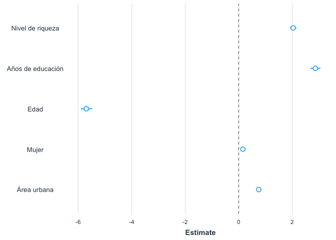

Regresión logística con los datos del Barómetro de las Américas
Introducción
En la sección anterior vimos los aspectos básicos del modelo logístico para analizar la relación entre una variable dependiente binaria y una variable independiente.
En esta sección se seguirá replicando los análisis del capítulo “Redes sociales y actitudes políticas” del reporte El Pulso de la Democracia de la ronda 2018/19. En ese capítulo se analiza una medición de apoyo a la democracia.
Sobre la base de datos
Los datos que vamos a usar deben citarse de la siguiente manera: Fuente: Barómetro de las Américas por el Proyecto de Opinión Pública de América Latina (LAPOP), wwww.LapopSurveys.org. Pueden descargar los datos de manera libre aquí.
Se recomienda limpiar el Environment antes de iniciar esta sección.
En este documento nuevamente se carga una base de datos en formato
RData. Este formato es eficiente en términos de espacio de
almacenamiento. Esta base de datos se encuentra alojada en el
repositorio”materials_edu” de la cuenta de LAPOP en GitHub. Mediante la
librería rio y el comando import se puede
importar esta base de datos desde este repositorio, usando el siguiente
código.
library(rio)
lapop18 <- import("https://raw.github.com/lapop-central/materials_edu/main/lapop18.RData")
lapop18 <- subset(lapop18, pais<=35)Modelo de regresión logística
Para evaluar los factores asociados al uso de redes sociales se puede calcular un modelo de regresión. En este caso, a diferencia del modelo de regresión lineal, la variable dependiente no es numérica, sino que se trata de una variable dicotómica, con valores 0, para indicar a los no usuarios, y 1 para identificar a los usuarios de redes sociales.
Con este tipo de variable dependiente no es apropiado usar un modelo de regresión lineal. Las razones para esto son múltiples. Un modelo lineal para aproximar la relación entre una variable dependiente dicotómica y una independiente numérica podría dar valores predichos mayores que 1 o menores que 0, por lo que no es una buena aproximación para calcular probabilidades.
Por el contrario, un modelo de regresión logística restringe los resultados entre 0 y 1, por lo que se puede interpretar como una probabilidad. En nuestro ejemplo, se calcula la probabilidad de ser usuario de redes sociales para diferentes valores de las variables independientes.
Otras razones para no usar un modelo de regresión lineal son más técnicas y tienen que ver con los residuos. Si se usara un modelo de regresión lineal para aproximar la relación entre una variable dependiente dicotómica y una independiente numérica se tendría residuos no normalmente distribuidos y hererocedásticos
El modelo se calcula con el comando glm donde se indica
la variable Y y luego las variables independientes. Cada variable
independiente se suma al modelo. El modelo incluye efectos fijos por
país. En la sección sobre regresión
lineal múltiple se explicó el uso de efectos fijos por país para una
regresión lineal, es decir, cuando la variable dependiente es numérica.
Aquí se usará el mismo comando factor() para incluir
variables dummy de cada país, tomando a México (país 1) como
referencia.
Este modelo de guarda en un objeto “modelo1” el que se puede
describir con el comando summary.
modelo1 <- glm(user ~ riqueza + educ + edad + mujer + urban + factor(pais), family = binomial, data=lapop18)
summary(modelo1)##
## Call:
## glm(formula = user ~ riqueza + educ + edad + mujer + urban +
## factor(pais), family = binomial, data = lapop18)
##
## Deviance Residuals:
## Min 1Q Median 3Q Max
## -3.4629 -0.4583 0.2897 0.5852 2.9097
##
## Coefficients:
## Estimate Std. Error z value Pr(>|z|)
## (Intercept) -0.76385 0.09468 -8.068 7.15e-16 ***
## riqueza 2.03825 0.05708 35.710 < 2e-16 ***
## educ 2.86594 0.09167 31.265 < 2e-16 ***
## edad -5.69441 0.10458 -54.448 < 2e-16 ***
## mujer 0.14776 0.03556 4.155 3.25e-05 ***
## urban 0.74510 0.04060 18.353 < 2e-16 ***
## factor(pais)2 -0.20677 0.09583 -2.158 0.030965 *
## factor(pais)3 15.88183 85.89147 0.185 0.853303
## factor(pais)4 -0.26064 0.09604 -2.714 0.006649 **
## factor(pais)5 -0.54242 0.09522 -5.696 1.22e-08 ***
## factor(pais)6 1.92058 0.11207 17.137 < 2e-16 ***
## factor(pais)7 -0.44665 0.09503 -4.700 2.60e-06 ***
## factor(pais)8 0.51202 0.09770 5.241 1.60e-07 ***
## factor(pais)9 0.34890 0.10163 3.433 0.000597 ***
## factor(pais)10 0.09251 0.09715 0.952 0.340992
## factor(pais)11 -0.06467 0.09814 -0.659 0.509967
## factor(pais)12 0.88679 0.10191 8.702 < 2e-16 ***
## factor(pais)13 1.00887 0.10400 9.701 < 2e-16 ***
## factor(pais)14 1.89743 0.10781 17.600 < 2e-16 ***
## factor(pais)15 1.11293 0.10544 10.555 < 2e-16 ***
## factor(pais)17 1.41948 0.11000 12.905 < 2e-16 ***
## factor(pais)21 0.80326 0.10380 7.739 1.00e-14 ***
## factor(pais)23 0.54686 0.10213 5.354 8.58e-08 ***
## ---
## Signif. codes: 0 '***' 0.001 '**' 0.01 '*' 0.05 '.' 0.1 ' ' 1
##
## (Dispersion parameter for binomial family taken to be 1)
##
## Null deviance: 31852 on 26274 degrees of freedom
## Residual deviance: 20156 on 26252 degrees of freedom
## (1767 observations deleted due to missingness)
## AIC: 20202
##
## Number of Fisher Scoring iterations: 15Los resultados muestran los coeficientes, los errores estándar, el estadístico Z y el p-value asociado. Con estos datos se puede extraer conclusiones acerca de la dirección de la relación entre cada variable independiente y la variable dependiente. Por ejemplo, la relación entre riqueza y la probabilidad de ser usuario de redes sociales es directa, a medida que aumenta la riqueza aumenta las probabilidades de ser usuario. La relación entre edad y la probabilidad de ser usuario de redes sociales es negativa, a medida que aumenta la edad disminuyen las probabilidades de ser usuario de redes sociales. En ambos casos, dado que el p-value es menor a 0.05, se tienen relaciones estadísticamente significativas.
Los coeficientes de la regresión se interpretan como el cambio en el log odds de la variable dependiente por cada incremento de una unidad de la variable independiente. Por ejemplo, por cada año adicional en la edad, el log odd de ser usuario de una red social (versus no ser usuario) disminuye en 5.69.
Otra manera de presentar estos coeficientes es transformarlos con la función exponencial. De esta manera los resultados se pueden interpretar como aumentos en la probabilidad en un factor de acuerdo al resultado.
Con el código siguiente se realiza esta operación para las principales variables independientes, excluyendo a las variables dummy por país.
exp(coef(modelo1)[1:6])## (Intercept) riqueza educ edad mujer urban
## 0.465868370 7.677171277 17.565547484 0.003364729 1.159238630 2.106646383De esta manera se puede interpretar que un aumento de una unidad en la variable riqueza aumenta la probabilidad de ser usuario de una red social en un factor de 7.7. Como la variable riqueza fue recodificada para que varíe entre 0 y 1, un aumento de una unidad es el máximo aumento posible.
Para el caso de las mujeres, se puede concluir que las mujeres tienen un 15.9% más de probabilidades de ser usuarias de una red social que los hombres.
Para presentar los resultados de una manera más ordenada, se pueden
usar varias librerías y comandos. En esta sección usamos la librería
jtools y el comando summs. Este comando nos
brinda además estadísticos para evaluar el ajuste del modelo. Por
ejemplo, el estadístico de \(\chi^2\)
evalúa el modelo multivariado versus el modelo nulo. Como se obtiene un
estadístico grande y un p-value menor a 0.05, se concluye que el modelo
se ajusta a los datos.
Otro estadístico es el Pseudo-\(R^2\), que aunque no se puede interpretar como el coeficiente de determinación de una regresión lineal, da una idea de la capacidad explicativa del modelo.
#library(stargazer)
#stargazer(modelo1[1:6], align=T, type = 'text')
library(jtools)
summ(modelo1)## MODEL INFO:
## Observations: 26275 (1767 missing obs. deleted)
## Dependent Variable: user
## Type: Generalized linear model
## Family: binomial
## Link function: logit
##
## MODEL FIT:
## χ²(22) = 11696.30, p = 0.00
## Pseudo-R² (Cragg-Uhler) = 0.51
## Pseudo-R² (McFadden) = 0.37
## AIC = 20201.95, BIC = 20390.01
##
## Standard errors: MLE
## ----------------------------------------------------
## Est. S.E. z val. p
## -------------------- ------- ------- -------- ------
## (Intercept) -0.76 0.09 -8.07 0.00
## riqueza 2.04 0.06 35.71 0.00
## educ 2.87 0.09 31.27 0.00
## edad -5.69 0.10 -54.45 0.00
## mujer 0.15 0.04 4.16 0.00
## urban 0.75 0.04 18.35 0.00
## factor(pais)2 -0.21 0.10 -2.16 0.03
## factor(pais)3 15.88 85.89 0.18 0.85
## factor(pais)4 -0.26 0.10 -2.71 0.01
## factor(pais)5 -0.54 0.10 -5.70 0.00
## factor(pais)6 1.92 0.11 17.14 0.00
## factor(pais)7 -0.45 0.10 -4.70 0.00
## factor(pais)8 0.51 0.10 5.24 0.00
## factor(pais)9 0.35 0.10 3.43 0.00
## factor(pais)10 0.09 0.10 0.95 0.34
## factor(pais)11 -0.06 0.10 -0.66 0.51
## factor(pais)12 0.89 0.10 8.70 0.00
## factor(pais)13 1.01 0.10 9.70 0.00
## factor(pais)14 1.90 0.11 17.60 0.00
## factor(pais)15 1.11 0.11 10.56 0.00
## factor(pais)17 1.42 0.11 12.90 0.00
## factor(pais)21 0.80 0.10 7.74 0.00
## factor(pais)23 0.55 0.10 5.35 0.00
## ----------------------------------------------------El Gráfico 3.4 muestra los coeficientes de cada variable y el
intervalo de confianza al 95% de este estimado. Se incluye una línea
vertical en el punto 0. Si un intervalo de confianza cruza esta línea
vertical, se puede decir que no tiene una relación estadísticamente
significativa con la variable dependiente de apoyo al sistema. Los
intervalos de confianza que no cruzan esta línea y que se encuentran a
la derecha (izquierda) de esta línea tienen una relación positiva
(negativa) con el apoyo al sistema, es decir, cuando aumenta esta
variable, el apoyo al sistema promedio aumenta (disminuye). En este
ejemplo, las cinco variables son estadísticamente significativas y
muestran tienen una relación positiva con el apoyo al sistema. Para
aproximar un gráfico similar al mostrado en el reporte, se puede usar la
librería jtools y el comando plot_summs. Se
selecciona solo las variables independientes de relevancia.
library(jtools)
plot_summs(modelo1, coefs=c("Nivel de riqueza"="riqueza", "Años de educación"="educ",
"Edad"="edad", "Mujer"="mujer", "Área urbana"="urban"))## Registered S3 methods overwritten by 'broom':
## method from
## tidy.glht jtools
## tidy.summary.glht jtools## Loading required namespace: broom.mixed## Warning: glm.fit: fitted probabilities numerically 0 or 1 occurred
## Warning: glm.fit: fitted probabilities numerically 0 or 1 occurred
## Warning: glm.fit: fitted probabilities numerically 0 or 1 occurred
## Warning: glm.fit: fitted probabilities numerically 0 or 1 occurred
## Warning: glm.fit: fitted probabilities numerically 0 or 1 occurred
## Warning: glm.fit: fitted probabilities numerically 0 or 1 occurred
## Warning: glm.fit: fitted probabilities numerically 0 or 1 occurred
## Warning: glm.fit: fitted probabilities numerically 0 or 1 occurred
## Warning: glm.fit: fitted probabilities numerically 0 or 1 occurred
## Warning: glm.fit: fitted probabilities numerically 0 or 1 occurred
## Warning: glm.fit: fitted probabilities numerically 0 or 1 occurred
## Warning: glm.fit: fitted probabilities numerically 0 or 1 occurred
## Warning: glm.fit: fitted probabilities numerically 0 or 1 occurred
## Warning: glm.fit: fitted probabilities numerically 0 or 1 occurred
## Warning: glm.fit: fitted probabilities numerically 0 or 1 occurred
## Warning: glm.fit: fitted probabilities numerically 0 or 1 occurred
## Warning: glm.fit: fitted probabilities numerically 0 or 1 occurred
## Warning: glm.fit: fitted probabilities numerically 0 or 1 occurred
## Warning: glm.fit: fitted probabilities numerically 0 or 1 occurred
## Warning: glm.fit: fitted probabilities numerically 0 or 1 occurred
## Warning: glm.fit: fitted probabilities numerically 0 or 1 occurred
## Warning: glm.fit: fitted probabilities numerically 0 or 1 occurred
## Warning: glm.fit: fitted probabilities numerically 0 or 1 occurred
## Warning: glm.fit: fitted probabilities numerically 0 or 1 occurred
## Warning: glm.fit: fitted probabilities numerically 0 or 1 occurred
## Warning: glm.fit: fitted probabilities numerically 0 or 1 occurred
## Warning: glm.fit: fitted probabilities numerically 0 or 1 occurred
## Warning: glm.fit: fitted probabilities numerically 0 or 1 occurred
## Warning: glm.fit: fitted probabilities numerically 0 or 1 occurred
## Warning: glm.fit: fitted probabilities numerically 0 or 1 occurred
## Warning: glm.fit: fitted probabilities numerically 0 or 1 occurred
## Warning: glm.fit: fitted probabilities numerically 0 or 1 occurred
## Warning: glm.fit: fitted probabilities numerically 0 or 1 occurred
## Warning: glm.fit: fitted probabilities numerically 0 or 1 occurred
## Warning: glm.fit: fitted probabilities numerically 0 or 1 occurred
## Warning: glm.fit: fitted probabilities numerically 0 or 1 occurred
## Warning: glm.fit: fitted probabilities numerically 0 or 1 occurred
## Warning: glm.fit: fitted probabilities numerically 0 or 1 occurred
## Warning: glm.fit: fitted probabilities numerically 0 or 1 occurred
## Warning: glm.fit: fitted probabilities numerically 0 or 1 occurred
## Warning: glm.fit: fitted probabilities numerically 0 or 1 occurred
## Warning: glm.fit: fitted probabilities numerically 0 or 1 occurred
## Warning: glm.fit: fitted probabilities numerically 0 or 1 occurred
## Warning: glm.fit: fitted probabilities numerically 0 or 1 occurred
## Warning: glm.fit: fitted probabilities numerically 0 or 1 occurred
## Warning: glm.fit: fitted probabilities numerically 0 or 1 occurred
## Warning: glm.fit: fitted probabilities numerically 0 or 1 occurred
## Warning: glm.fit: fitted probabilities numerically 0 or 1 occurred
## Warning: glm.fit: fitted probabilities numerically 0 or 1 occurred
## Warning: glm.fit: fitted probabilities numerically 0 or 1 occurred
## Warning: glm.fit: fitted probabilities numerically 0 or 1 occurred
## Warning: glm.fit: fitted probabilities numerically 0 or 1 occurred
## Warning: glm.fit: fitted probabilities numerically 0 or 1 occurred
## Warning: glm.fit: fitted probabilities numerically 0 or 1 occurred
## Warning: glm.fit: fitted probabilities numerically 0 or 1 occurred
## Warning: glm.fit: fitted probabilities numerically 0 or 1 occurred
## Warning: glm.fit: fitted probabilities numerically 0 or 1 occurred
## Warning: glm.fit: fitted probabilities numerically 0 or 1 occurred
## Warning: glm.fit: fitted probabilities numerically 0 or 1 occurred
## Warning: glm.fit: fitted probabilities numerically 0 or 1 occurred
## Warning: glm.fit: fitted probabilities numerically 0 or 1 occurred
## Warning: glm.fit: fitted probabilities numerically 0 or 1 occurred
## Warning: glm.fit: fitted probabilities numerically 0 or 1 occurred
## Warning: glm.fit: fitted probabilities numerically 0 or 1 occurred
## Warning: glm.fit: fitted probabilities numerically 0 or 1 occurred
## Warning: glm.fit: fitted probabilities numerically 0 or 1 occurred
## Warning: glm.fit: fitted probabilities numerically 0 or 1 occurred
## Warning: glm.fit: fitted probabilities numerically 0 or 1 occurred
## Warning: glm.fit: fitted probabilities numerically 0 or 1 occurred
## Warning: glm.fit: fitted probabilities numerically 0 or 1 occurred
## Warning: glm.fit: fitted probabilities numerically 0 or 1 occurred
## Warning: glm.fit: fitted probabilities numerically 0 or 1 occurred
## Warning: glm.fit: fitted probabilities numerically 0 or 1 occurred
## Warning: glm.fit: fitted probabilities numerically 0 or 1 occurred
## Warning: glm.fit: fitted probabilities numerically 0 or 1 occurred
## Warning: glm.fit: fitted probabilities numerically 0 or 1 occurred
El gráfico producido es similar y sigue la misma tendencia que el Gráfico 3.4 presentado en el informe. Sin embargo, no presenta los mismos resultados pues, como indica el reporte, “los puntos en el Gráfico 3.4 son los cambios estimados en la probabilidad de que la variable dependiente tome un valor de”1” (usa redes sociales), dado un cambio del valor mínimo al máximo de la variable independiente” (p. 59). En este gráfico producido en esta sección se grafica el coeficiente de la regresión logística.
Resumen
En esta sección hemos usado un modelo de regresión ligística para modelar la relación de variables independientes con una variable dependiente dicotómica. En particular, se ha presentado un modelo con cinco predictores del uso de redes sociales. Este modelo se ha presentado de manera estándar en una tabla de resultados y mediante un gráfico similar al Gráfico 3.4 del reporte.
Incluyendo el efecto de diseño
Los cálculos realizados no incluyen el efecto de diseño muestral.
Para hacer esto se debe considerar el factor de expansión. Se hizo una
introducción al uso del factor de expansión aquí.
En este parte usaremos la librería survey.
Usaremos el comando svydesign (similar al comando svyset
en STATA). Con este comando se crea un nuevo objeto llamado
“lapop.design”, que guarda la información de las variables contenidas en
el dataframe, incluyendo en los cálculos el factor de expansión. Por
tanto, si luego se creara una nueva variable, se tendría que calcular
nuevamente esté comando para que este objeto “lapop.design” incluya esta
nueva variable.
library(survey)
lapop.design<-svydesign(ids = ~upm, strata = ~estratopri, weights = ~weight1500, nest=TRUE, data=lapop18)La librería survey incluye el comando
svyglm que permite calcular un modelo de regresión
logística. Las mismas variables usadas en el modelo 1 se pueden incluir
en este comando. Se tiene que especificar que se quiere calcular un
modelo binomial con la especificación family=quasibinomial.
También se tiene que especificar el diseño que se utiliza y el
tratamiento de los valores perdidos. Este cálculo se guarda en un objeto
“modelo2”. Se usa el comando summ de la librería
jtools para describir el modelo.
modelo2 <- svyglm(user ~ riqueza + educ + edad + mujer + urban + factor(pais), family=quasibinomial, design=lapop.design, na.action = na.omit)
summ(modelo2)## MODEL INFO:
## Observations: 26275
## Dependent Variable: user
## Type: Analysis of complex survey design
## Family: quasibinomial
## Link function: logit
##
## MODEL FIT:
## Pseudo-R² (Cragg-Uhler) = 0.51
## Pseudo-R² (McFadden) = 0.37
## AIC = NA
##
## ---------------------------------------------------
## Est. S.E. t val. p
## -------------------- ------- ------ -------- ------
## (Intercept) -0.76 0.10 -7.37 0.00
## riqueza 2.03 0.06 33.27 0.00
## educ 2.86 0.09 30.20 0.00
## edad -5.69 0.11 -53.54 0.00
## mujer 0.15 0.04 4.33 0.00
## urban 0.75 0.05 15.81 0.00
## factor(pais)2 -0.21 0.11 -1.80 0.07
## factor(pais)3 15.89 0.15 103.41 0.00
## factor(pais)4 -0.26 0.09 -2.75 0.01
## factor(pais)5 -0.54 0.11 -5.03 0.00
## factor(pais)6 1.92 0.14 13.65 0.00
## factor(pais)7 -0.45 0.13 -3.56 0.00
## factor(pais)8 0.51 0.11 4.78 0.00
## factor(pais)9 0.35 0.11 3.27 0.00
## factor(pais)10 0.09 0.11 0.88 0.38
## factor(pais)11 -0.06 0.11 -0.59 0.55
## factor(pais)12 0.89 0.10 8.56 0.00
## factor(pais)13 1.01 0.11 8.81 0.00
## factor(pais)14 1.90 0.12 16.04 0.00
## factor(pais)15 1.16 0.13 9.27 0.00
## factor(pais)17 1.42 0.12 11.55 0.00
## factor(pais)21 0.80 0.12 6.93 0.00
## factor(pais)23 0.55 0.11 4.82 0.00
## ---------------------------------------------------
##
## Estimated dispersion parameter = 1.01De la misma manera que con el modelo 1, estos resultados también se
pueden graficar usando el comando plot_summs, seleccionando
las variables que se quieren mostrar.
plot_summs(modelo2, coefs=c("Nivel de riqueza"="riqueza", "Años de educación"="educ",
"Edad"="edad", "Mujer"="mujer", "Área urbana"="urban"))
De la misma manera que con los resultados que no incluyen el efecto de diseño, este gráfico es similar al reportado en el informe, aunque no es exactamente igual.